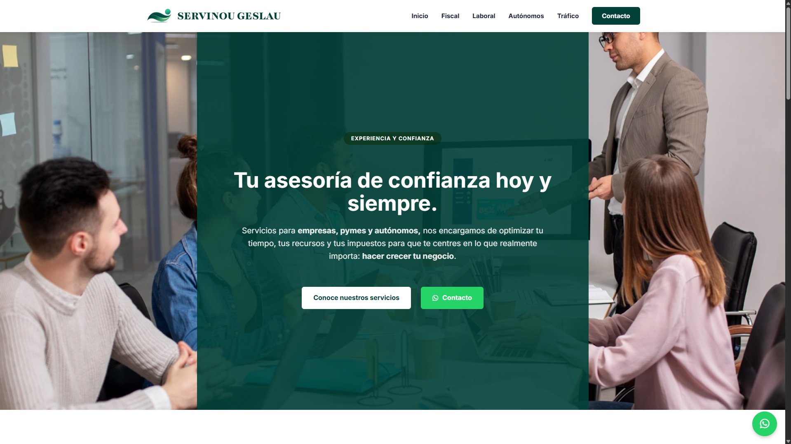
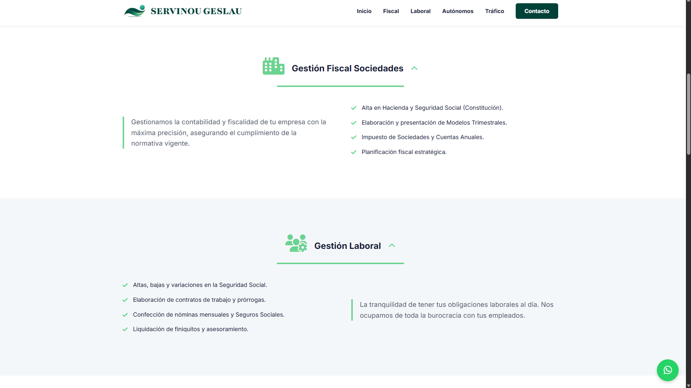
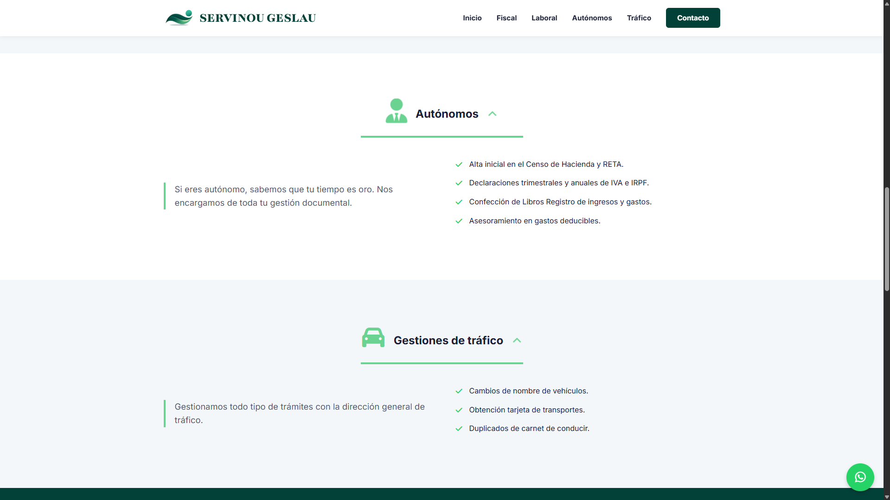
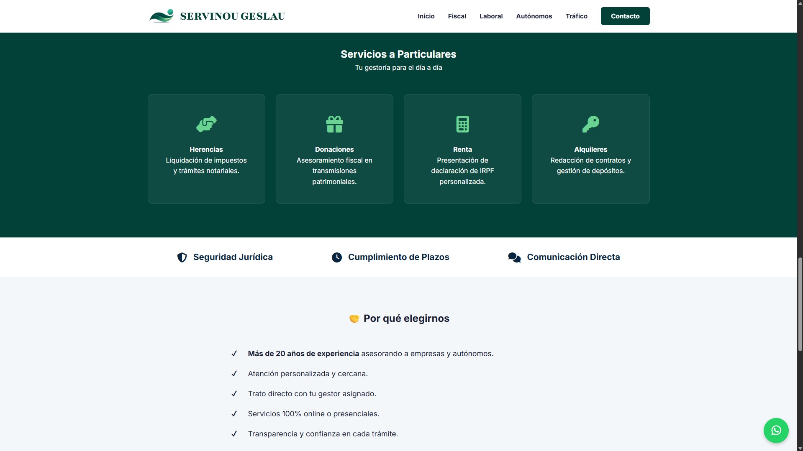
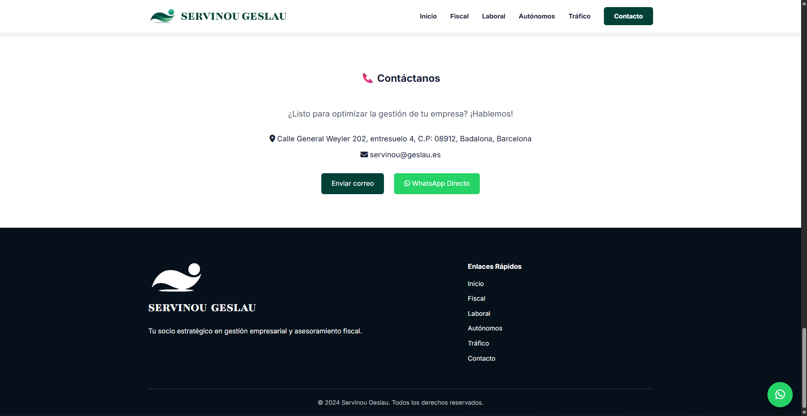

Servinou Geslau - Asesorías para empresas
Servnou Geslau - Asesoría de confianza para empresas, pymes y autónomos, es un proyecto que se materializó a través de una plataforma digital diseñada para ofrecer una experiencia de usuario excepcional. El sitio web fue desarrollado utilizando HTML, CSS y JavaScript para el frontend, con PHP y MySQL en el backend, creando un entorno robusto y dinámico.
Ofrece servicios de asesoría integral en áreas como contabilidad, fiscalidad, recursos humanos y gestión empresarial, adaptándose a las necesidades específicas de cada cliente. La plataforma cuenta con un diseño moderno y atractivo, con una navegación intuitiva que facilita a los usuarios explorar los diferentes servicios disponibles y contactar con el equipo de expertos para recibir asesoramiento personalizado.
- Asesoría contable y fiscal para empresas de todos los tamaños.
- Gestión de recursos humanos y nóminas.
- Consultoría en gestión empresarial y estrategia.
- Atención personalizada y soporte continuo.




